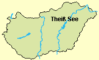
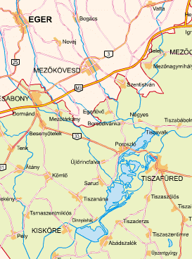
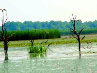
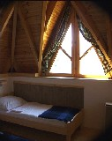
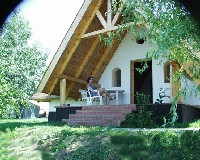
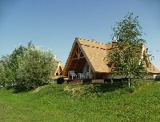

|
|
|
Theiß See - Ein
fischreicher
Anglerparadies in der Pußta
|
|
 |
Lage:
Fahrt von Budapest nach Nordosten auf der Autobahn M3 in Richtung
Ukraine, zugleich auch nach Debrecen. Südlich von Eger, bei
der
Ortschaft Füzesabony nimmt man die Ausfahrt nach Debrecen und
fährt rd. 25 km weiter auf der Landstrasse 33 bis
zum
Theiß See bzw. "Tisza tó" auf Ungarisch. |
 |
|
Der
Theiß
See wurde Anfang der 1970er Jahre in mehreren
Schritten zur
Bändigung des in diesem Bereich besonders wilden, zu
großen
Überschwemmungen neigenden Flusses Theiß aufgestaut.
Er ist
mit 127 qkm nach dem Balaton (600
qkm) der
zweitgrößte See
in Ungarn. Je nach dem, wie man es betrachtet, der
Theiß See ist in der Tat größer, als
der Neusiedler See an
der Grenze zu Österreich, dessen Größe mit
dem
Schilfgürtel zusammen mit 258 qkm angegeben wird.
Während der Neusiedler See ein zum Austrocknen verurteilter
Steppensee ist, gehört der Theiß See zu den
Fließgewässern, dementsprechend leben hier ganz
andere Fischarten.
Die
fischreiche, hier nur noch langsam fließende Theiß
ernährt bereits seit Generationen viele Familien, zum Teil noch heute, durch Fisch. |
Die
größte Tiefe mit 17 Metern ist beachtlich, aber
durchschnittlich ist der gesamte Stausee nur 1,3 m tief. Der Pegelstand wird zur
Milderung der Frühjahrsfluten im Winter um einen Meter
gesenkt. Die
ersten Touristen waren Angler und sie sind immer noch
weitgehend unter sich. Vergessen
Sie hier Ihre Alltagssorgen. Fischreichtum und Angeln in einer
puren Naturlandschaft ist hier das Alltagsthema.
|
|
Rekordfang am
17.06.2011: 2,14 m
langen und 82,5 kg schweren Wels fing ein
einheimischer Sportangler aus Veszprém beim Schleppangeln
aus Boot aus einer Tiefe von 12 m. Nach 30 Minuten Kampf hob
er den kapitalen Fang in sein Boot. Obwohl er im anderen Ende
von Ungarn lebt, ist sein bevorzugtes Revier der Theiß See
und verbringt hier von seiner Freizeit soviel er kann. Früher
fing er hier einen 68 kg schweren Wels. |
Gewässer:
Der
Theiß ist ein fischreicher Fluss, der aus den hohen Karpaten
entspringt und
jährlich wiederkehrende Überschwemmungen
verursacht, die wiederum für Nährstoff- und damit
Artenreichtum in Flora und Fauna sorgen. Der Wasserpegel wird am südlichen Siel
seit Jahren ab Anfang November langsam um einen Meter gesenkt
und beträgt anfangs 7,25 Meter. Da der See dabei "schwenkt,
beträgt der Wasserspiegel dann nur noch 5,6 Meter am Siel und
es bleibt zwei Tage lang so. Das trägt zur Reinigung des
stehenden Gewässers bei. Nach zwei tagen wird der Siel um 50
cm gehoben, sodass ein winterlicher Pegelstand von 6,20 Meter
für die bessere Überlebenschance der Fische sorgt und der
niedrigere Pegelstand dann die Überflutungen im nächsten
Frühjahr mildert.
Angeln kann man im Stausee
genauso, wie in den zahlreichen abgeschnittenen toten
oder langsam fließenden Flussarmen.
|
Fischarten:
Der
Artenreichtum ist enorm und die Chance auf kapitale Exemplare ist
groß. Mannsgroße Welse bis zu 100 Pfund sind
hier keine
Anglermärchen. Über
50 Fischarten leben im See, davon sind 12
geschützt.
Wels und Hecht kommen am häufigsten vor, weitere Arten,
die in stattlichen Exemplaren auf den Kampf mit den Anglern
warten, sind: Karpfen,
Zander, Gängling (Balin), Güster (Silberbalin), Aal,
Stör, die zwei aus Asien eingebürgerten
Scheinkarpfen,
Silber- und Amur-Graskarpfen, usw.
|
Köder:
Wer es
auf kapitale Exemplare von Wels oder Hecht absieht, dem
empfehlen wir Angeln aus Booten und als Köder den
Rapalla-Wobbler in 9 cm Forellenimitat.
Allerdings
schwören viele ältere ungarische Angler darauf,
dem Wels im Mittelwasser mit Wurmködern nachzustellen, aber
das
ist wetterabhängig und jeder sollte sein bestes Wissen
und Können einsetzen. Im Vogelerservat kann man
Karpfen, Brasseln und Hecht
nachgehen. Den Karpfen ködert man mit gekochtem Mais am
besten.
Angler sollten vor der Reise sicherheitshalber Schwimmwesten
besorgen
und auch an Mückenschutz denken.
|
|

|
Naturschutz:
Große Teile des Seegebietes sind Naturschutzgebiete,
vorwiegend
Vogelreservate. Bootsausflüge unter fachkundlicher Leitung, sog.
Ökotouren werden
nach dem 15. Juni täglich
organisiert, auch in die
Vogelreservate. Der Theiß See wurde in mehreren Schritten
aufgestaut
und erreichte seine aktuelle, wahrscheinlich endgültige
Höhe
erst vor rd. 15 Jahren. Die absterbenden Bäume bieten noch lange ideale Brut-
und Ratplätze für viele seltene Arten. |
Wer
nicht angeln mag und nur in Begleitung hierer kommt, wird trotzdem gut
versorgt mit fangfrischen Delikatessen. Ausflüge in die nahe
gelegenen Naturschutzgebiete in der Puszta sind möglich.
Programmangebot siehe unten.
|
| |
|
|
Angelhütten
direkt am Theiß
See
|
| |
|
|
|
 |
Neue,
erstklassige Ferienhäuser erwarten die Feriengäste am
Theiß See, ca. 2 km südlch von Tiszafüred
in Hafen Kormoran in der Ortschaft
Tiszaörvény.
Die beiden Ferienhäuser am Bild (Baujahr
2005)
waren die ersten Häuser einer neuen Feriensiedlung direkt am
Seeufer. Die
Holzhäuser berücksichtigen die besonderen
Bedürfnisse
der Angler. Alle
Häuser haben zwei
Schafräume mit je 2 Betten. In den Zimmern können
Zustellbetten aufgestellt werden. |
 |
|
Die
Häuser mit einem angenehmen Innenklima sind beheizbar und
können ganzjährig gebucht werden. Eine gut
ausgestattete Küche
und
Badezimmer mit Dusche gibt es in allen Häusern. Von den
windgeschützten Terrassen hat man einen Panoramablick
über
den See. Ein eigener Abstellplatz für Pkw und ein Grillplatz
gehören zu jedem Haus, die Boote bleiben im nahe gelegenen
Hafen. Neue Kanus
und Angelboote, z.T. mit Motoren stehen im
Hafen den erholungssuchenden Gästen zur Verfügung. |
 |
| |
|
|
|
Umgebung
- Versorgung - Programme |
|
Im
Hafengebiet ist das Baden verboten. Es gibt jedoch ein Freibad 1,5 km
entfernt und das nächste Thermalbad findet man 3 km entfernt
in
der Ortschaft Tiszafüred.
Empfehlenswerte
Heilbäder gibt es in den ca. 30 km entfernt liegenden
Ortschaften
Berekfürdő und Mezőkövesd.
Die nächsten Aquaparks gibt es in
Hajdúszoboszló (50km), Debrecen (70 km)
und
Tiszaújváros (75 km).
Lebensmittelgeschäfte:
Coop 500
m, Penny, Lidl und Spar 3 km
entfernt.
Es gibt ein Ausrüstungsgeschäft für
Angler in der Nähe.
In der
Gaststätte gleich neben dem Hafen werden Discoabende
veranstaltet.
Organisierte
Programmangebote vor Ort:
|
- geführte
Bootstouren ins Vogelreservat,
-
Kanutouren
in stabileren Kanus für 3-4 Personen,
-
Fahrradverleih
(Seeumrundung möglich),
- Kochen in Kesseln und Grillen unter
schattenspendenden Weiden ( sollte man
erlernen),
-
Naturfotographie,
-
Reitmöglichkeit
ca. 1 km entfernt.
|
- Nationalpark
Hortobágy (30 km, Grauinder, Groß- und
Kleintrappe, und und und..),
- Thermalbad in Hajduszoboszló,
- Puszta-Großstadt Debrecen,
- kulturhistorisch
interessant ist Eger (50 km - Wehrburg aus der Türkenzeit,
zwei große Kirchenund ein Heilbad.
|
|
|
Angelschein in Ungarn? |
Zum Angeln berechtigt ist
in Ungarn, wer einen staatlichen Angelschein
und
eine für das gegebene Gewässer gütige
territoriale
Genehmigung besitzt. Diese Papiere sind bei den Angelvereinen und
überall dort erhältlich, wo auch die Angelscheine
gelöst
werden - in ländlichen Gegenden, oft in Einkaufszentren, am
besten
vor Ort fragen!
Ausländer
können den staatlichen Angelschein nach Vorlage des
Reisepasses
kaufen - der deutsche Personalausweis genügt. Der Angelschein
ist beschränkt, einerseits räumlich auf bestimmte
Gewässer, andererseits zeitlich in Form eines Tages-, Wochen-
oder
Jahresangelscheines.
Wie die
Ungarn den Angelschein erwerben:
Ein Anfänger muss eine Anglerprüfung ablegen und
danach den
staatlichen Angelschein auslösen. Voraussetzung für
eine
Genehmigung ist auch die Mitgliedschaft in einem Angelverein.
Die Anglerprüfung kann bei einem beliebig gewählten
Anglerverein abgelegt werden, hier bekommt man auch genaue
Informationen über die Angelbedingungen. Die Mitglieder des
Vereins bekommen den staatlichen Angelschein und bei Bedarf die
territoriale Genehmigung für bestimmte Gewässer.
Die Regeln und die Anordnung des Fischerei- und Angelgesetzes
bezüglich der Fangmenge, Fischgröße, und
Fangzeiten
stehen auf dem staatlichen Angelschein. Auf den territorialen
Genehmigungen stehen das Gültigkeitsdatum und die speziell
für die gegebenen Gewässer gültige
Vorschriften und
Beschränkungen.
|
|
|
Zum Angeln
benötigte Unterlagen am
Theiß See |
Alle
Angler einer Angelgruppe müssen einen eigenen Angelschein
haben,
das wird bei gelegentlichen Kontrollen peinlich genau geprüft. Die aktuellen Preise
für die Territorialgenehmigung für
den Theiß See erkundigen Sie bitte vor Ort. Es gibt:
Angelscheine mit Tagesgenehmigung,
für zwei Tage oder eine Woche.
|
Der Eintritt in den örtlichen Angelverein ist eine
gute
Investition, dafür bekommt man ordentliche
Preisnachlässe.
Als Gebühren ausländischer
Nichtmitglieder
des Angelvereins werden sehr niedrige Gebühren erhoben.
Der Eintritt in den Verein
ist möglich, wenn der Angler in
seiner
Heimat eine Anglerprüfung erfolgreich abgelegt hatte und den
gültigen Angelschein vorzeigen kann.
|
|
Anfrage
und Buchung >>>
|
| |
|
| |
| |
Ungarn-Tourist Team

|
| |
 |
| |
|